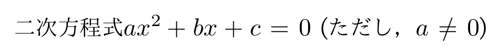
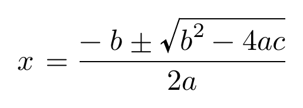

${ ... } で囲われた部分は数式として扱われます。
コード例
+p {
二次方程式 ${ax^2 + bx + c = 0} (ただし，${a \neq 0})
}
コード例の組版結果 (SATySFi version 0.0.3)

数式からなるブロック要素を作るには、多くの場合 +math を使います。末尾にセミコロンが必要です。
コード例
+math (${
x = \frac{-b \pm \sqrt{b^2 - 4ac}}{2a}
});
コード例の組版結果 (SATySFi version 0.0.3)
